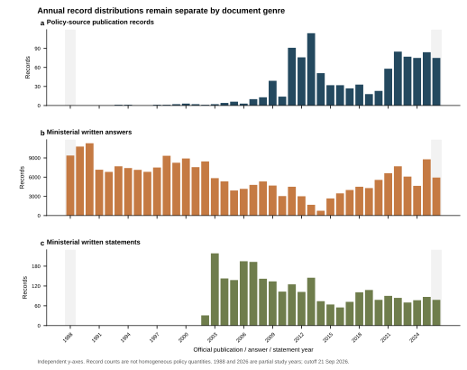
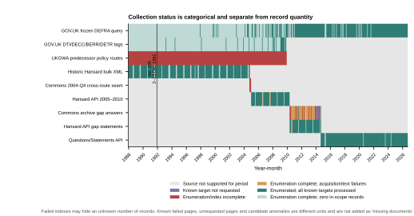

Government targeted gap repair
Final snapshot: 2026-09-22T06:28:35Z; all writes were incremental to the formal 06 database.
documents239,586+407
policy_document1,054+0
ministerial_written_answer235,824+404
ministerial_written_statement2,708+3
text_segments3,623,437+1,398
Queue reconciliation
| Queue | Unit | Expected | Attempted | Recovered | Excluded | Unresolved | New docs |
|---|---|---|---|---|---|---|---|
| Saved Hansard answer payload parser repair | answer target | 85 | 85 | 83 | 0 | 2 | 83 |
| Failed written-statement candidates | candidate container | 9 | 9 | 3 | 5 | 1 | 3 |
| Historic Hansard volume 200 daily repair | written-answer item | 322 | 322 | 321 | 0 | 1 | 321 |
| Historic policy OCR | downloaded PDF file | 4 | 4 | 4 | 0 | 0 | 0 |
| 2010–2014 failed date indexes | date index | 20 | 1 | 0 | 0 | 20 | 0 |
| 2010–2014 known page repair queue | archive HTML page | 437 | 1 | 0 | 0 | 437 | 0 |
| 2004-Q4 Commons cross-route seam | date range with unknown target denominator | unknown | 2 | 0 | 0 | 1 | 0 |
Index, page, candidate, item and file units are not combined as missing documents. The 2004-Q4 Commons denominator and records hidden by failed 2010–2014 indexes remain unknown.
Repaired distribution


Full concise Markdown report · Distribution and coverage dashboard